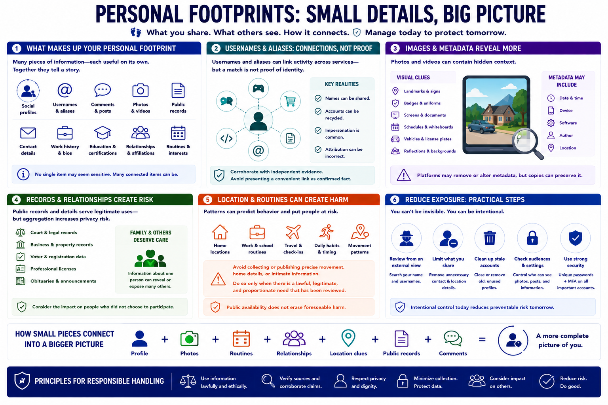

Personal Digital Footprints
Connecting to LMS... Progress: in progress

Narration
Personal footprints include social profiles, usernames, aliases, comments, public photographs, videos, records, contact details, and professional biographies. Each item can reveal interests, routines, affiliations, history, or relationships, even when no single source appears sensitive.
Usernames and aliases may connect activity across services, but a match is not proof of identity. Names can be shared, recycled, impersonated, or misattributed. Responsible analysis requires corroboration and avoids presenting a convenient association as confirmed fact.
Images can reveal more than their subject. Visible landmarks, badges, screens, documents, schedules, vehicle details, or reflections may provide context. Metadata can sometimes describe time, device, software, author, or location, although platforms often remove or alter it.
Public records and contact information may serve legitimate civic or business purposes while still creating privacy risk when aggregated. Family and relationship details deserve particular care. Information about one person can expose others who did not choose to participate.
Location clues and routines can create safety concerns. Privacy-conscious practice avoids collecting or publishing precise movement, home details, or intimate information unless a lawful, legitimate, and proportionate need has been reviewed. Public availability does not erase foreseeable harm.
Individuals can reduce exposure by reviewing profiles from an external perspective, limiting unnecessary contact and location details, removing stale accounts, checking photo and post audiences, and using strong unique authentication. The goal is not invisibility; it is intentional control and reduced preventable risk.